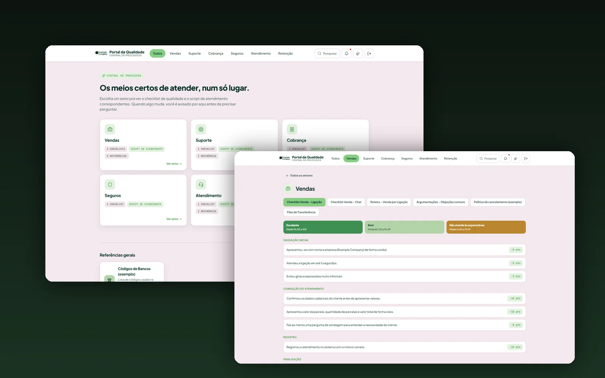
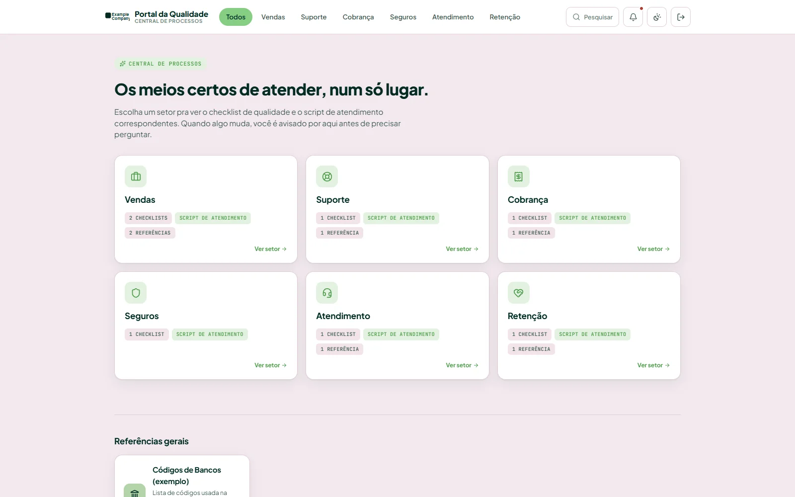
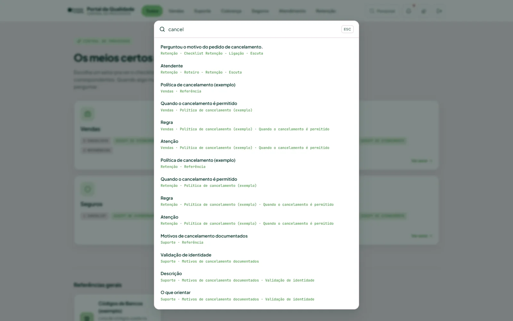
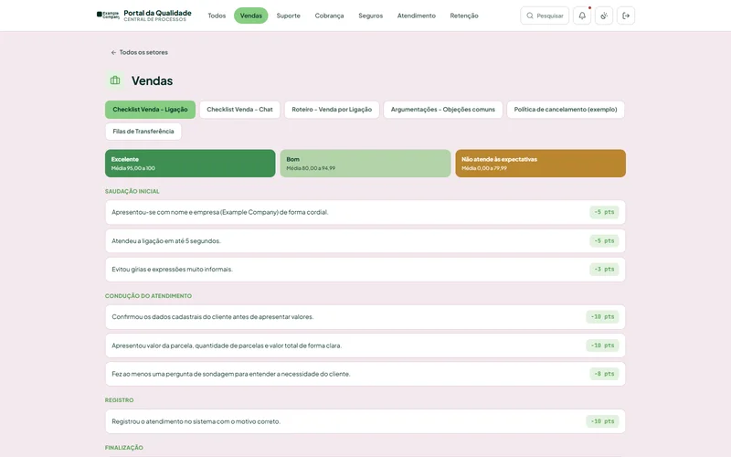
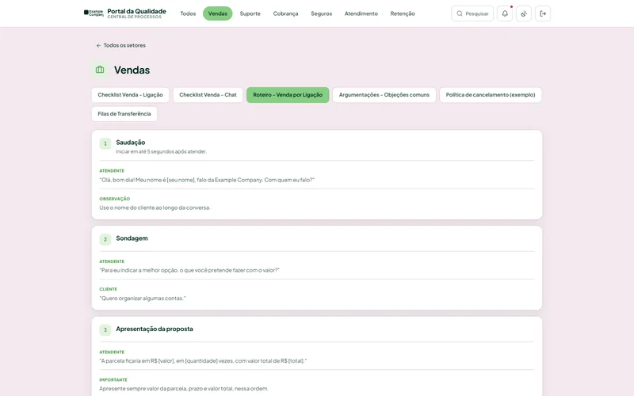
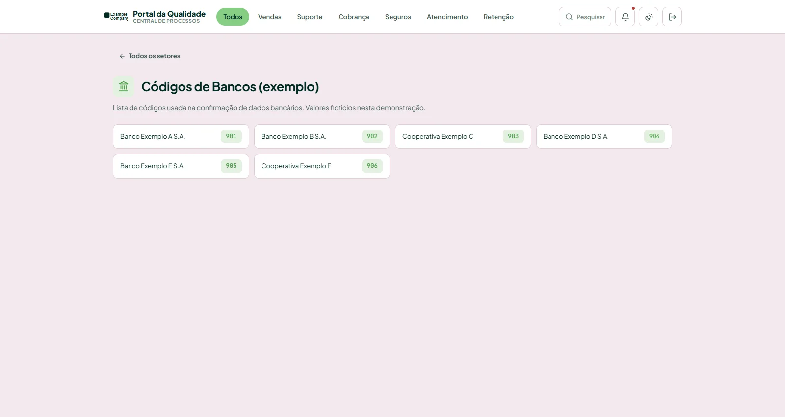

Portal da Qualidade
A searchable operational knowledge hub that brings quality criteria, service scripts, and departmental references into one place.
Completed implementation · Workflow improvements demonstrated by the interface
- Challenge
- Checklists and reference documents were difficult to navigate as isolated materials.
- My contribution
- Structured departmental content, built navigation and contextual search, and implemented content administration with role-based access.
- Outcome
- Replaced document-by-document navigation with one searchable library covering six departments. This demonstrates a simpler lookup workflow; time savings have not been measured.

One entry point for six departments
The home page organizes materials for Sales, Support, Collections, Insurance, Customer Service, and Retention. Each department shares the same navigation model while retaining its own criteria and guidance.
Checklists, call scripts, chat instructions, and references are organized by use. The workflow lets a user choose a department, select a material, and consult the relevant guidance.

Find the guidance, then the exact passage
Search indexes departments, criteria, scripts, and references. Users can search within a department or across the portal, with normalized queries and context for each result.
Choosing a result opens the material and highlights the relevant passage. Ctrl/Cmd + K provides a keyboard shortcut. The local preview searches static documentation, not customer records.



Content that can be maintained
Departments, checklists, scripts, and references are represented as structured data. The frontend generates navigation, documents, and a search index from that structure.
Administrative capabilities include editing and duplicating blocks, rearranging cards, deleting and undoing changes, and publishing content updates. Apps Script manages sessions and Admin, Auditor, and Operator roles, checks backend permissions, and persists changes in Google Sheets when connected.

Need a similar capability on your team?
I work across data, automation, and web development, connecting technical decisions to everyday operations.
Email LucasLinkedIn